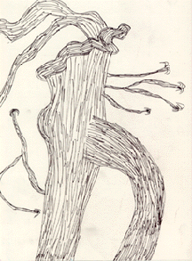
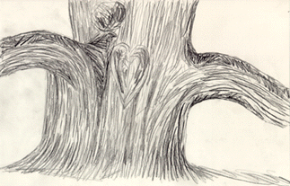

Student Project
Jenna


This tree--so wise in aged old time
Stands before me as I stand before it
And in its grandeur it glorifies the world
Sprung from a seed that would not die
Outliving the rain that gave it life
And enlightening those who can feel its magic
-Jenna
c. Jenna
Grade 10
Gill St. Bernard's School
Gladstone, New Jersey USA
Pencil on Paper 9 "X12"
White Oak
Latin Name: Quercus
Age: 600 years
Circumference: 20 feet at 54 inches from the base
Location: Basking Ridge, New Jersey
 Return to Main Page
Return to Main Page
June Julian jj68@nyu.edu